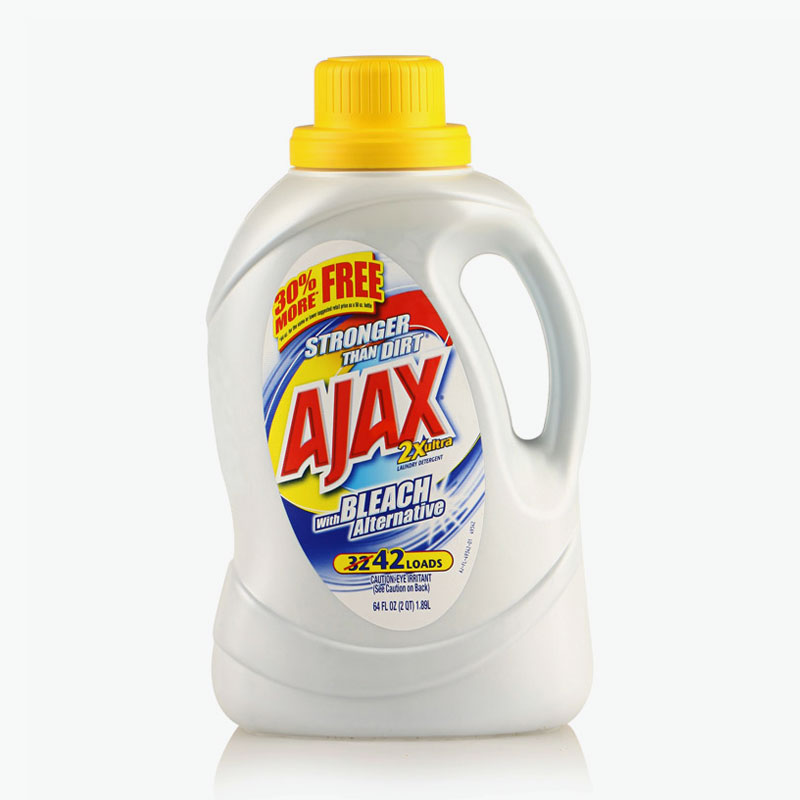

Structure d'API
Format de données
(souvent utilisé pour retourner des valeurs avec REST)
Système de requête AJAX de javascript.
var req = new XMLHttpRequest();
req.open('GET', 'URL', false);
req.send(null);
if (req.status){
alert('OK');
} else {
alert(req.responseText);
}
Nouvelle manière de fetcher des ressources sur le réseau.
fetch(input, init)
.then(function(response) {
//code
};
$.GET();
$.AJAX();
$.ajax({
url: "URL",
method: "METHOD",
data: {}
}).success(function (response) {
//code en cas de succes
}).error(function () {
//code en cas d'erreur
});
$.GET();
$.get("URL", function (response) {
//code en cas de succes
});